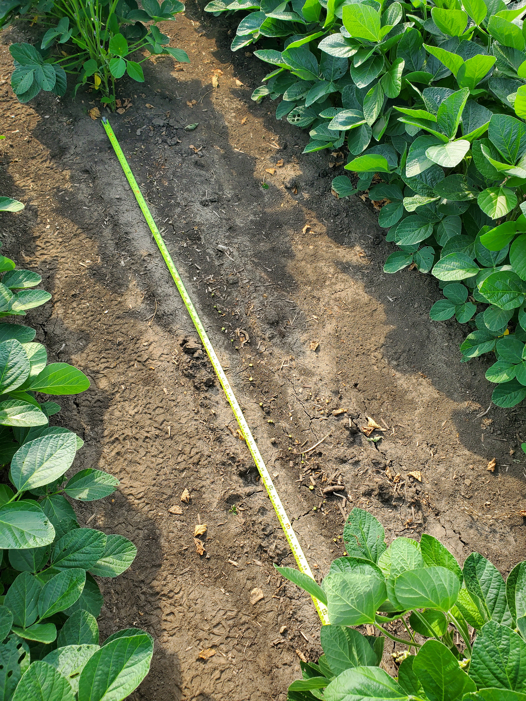
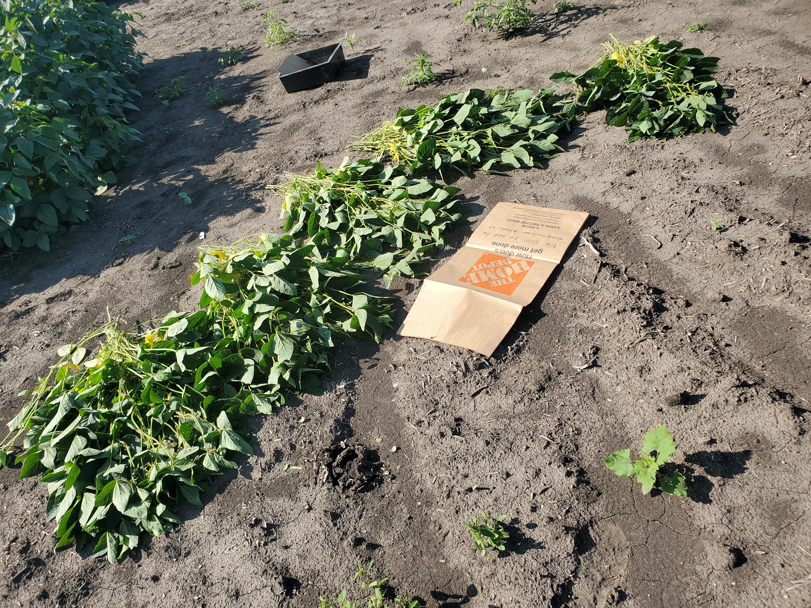
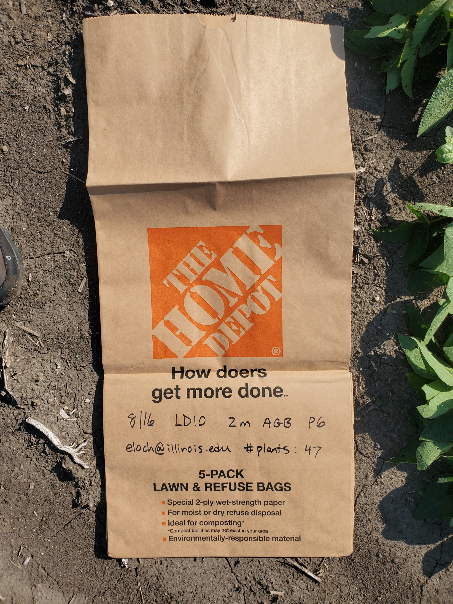
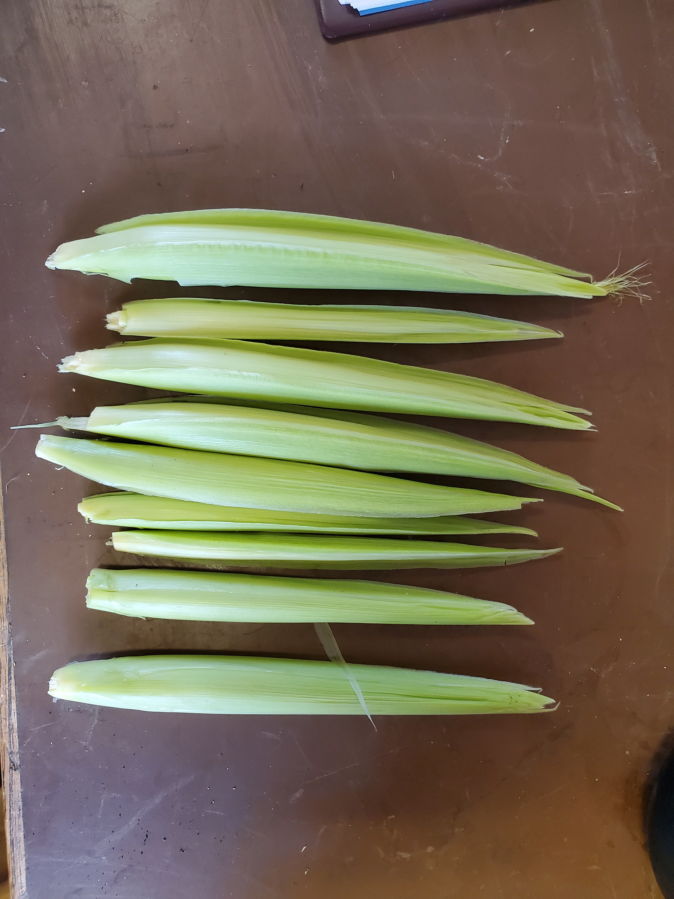
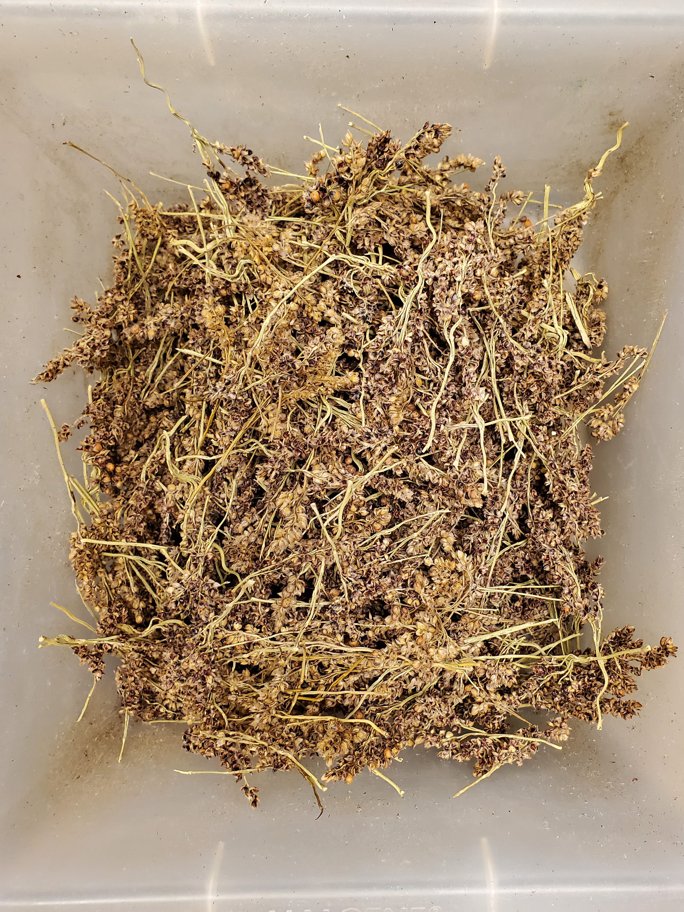
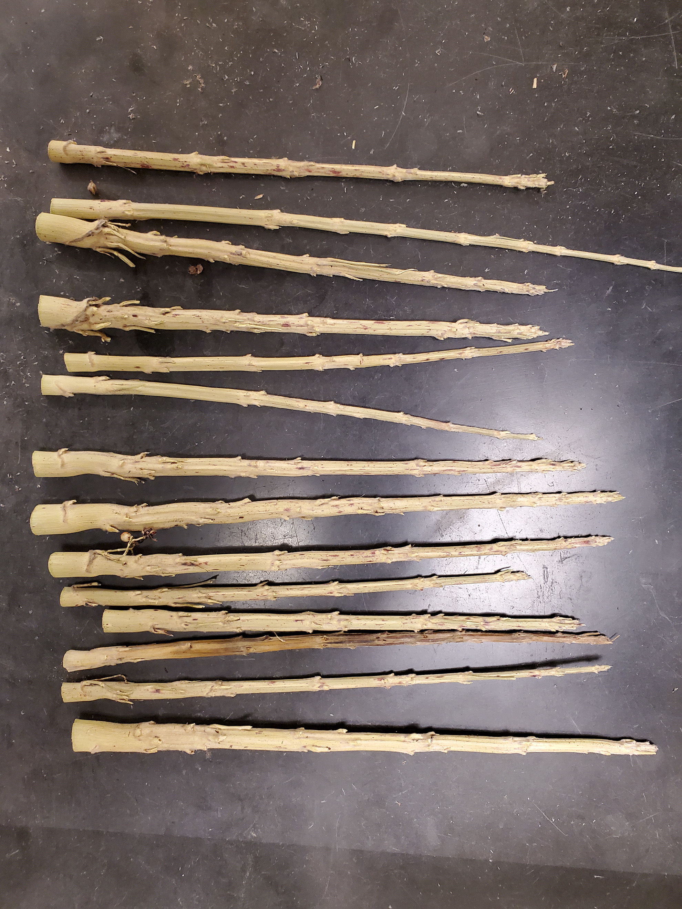
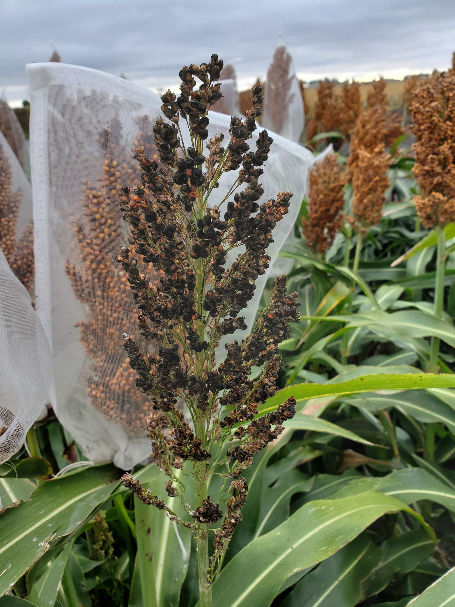

Images from the Field
Source:vignettes/web_only/images_from_the_field.Rmd
images_from_the_field.RmdOverview
This vignette shows some helpful example images that were taken while harvesting and weighing tissue. This vignette is a work in progress, and more images will be added in the future.
Harvesting Plant Tissue
Soybean Walkthrough
This section illustrates the key harvest steps using soybean as an example.
- Measure out two meters from one of the inner rows and cut the stems just above the ground. If a litter trap is not present, also collect any litter on the ground that can clearly be associated with the plants that were cut.

- Count and collect the plants, and then fold them and put them in a large lawn bag. When the plants are dense, it can be helpful to cut them in groups of ten and count them at the end.

- Record key information on the bag itself, including the number of plants and the length of the row section. This can be transferred to the harvest record sheet later.

Harvesting Maize Ears
Large fertilized ears can be simply snapped off the stem. Unfertilized ears are also harvested. They can be difficult to find if they have not emerged or produced silks, but they can nevertheless be cut out of the stems. The image below shows some unfertilized maize ears during a harvest.

Weighing Tissue
Weighing Sorghum Panicles
After weighing the intact sorghum panicles and threshing off the grain, the next step is to remove and weigh the flowers. The image below shows the flowers while they are being weighed.

The image below shows the remnants of the sorghum panicles after the grain and flowers have been removed. These are essentially just segments of the stem.

Miscellaneous Field Considerations
Protecting Sorghum Panicles
Flocks of starlings may eat the sorghum grain. To protect it, cover the panicles with large “fruit protection bags.” These are mesh bags that allow air flow but prevent bird damage. They are time-consuming to attach, so they should only be placed on panicles in the middle two rows. The image below shows a damaged panicle in the foreground, while the panicles in bags are still in perfect shape.
